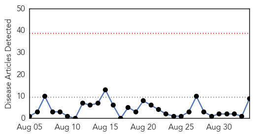
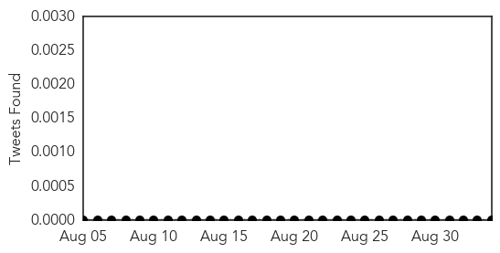
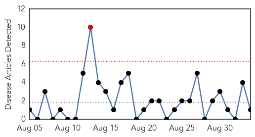
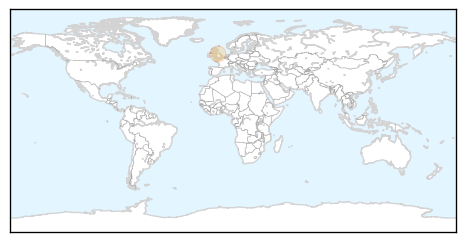

Chikungunya
30-Day Web Trend
0 alerts, 0 warnings

30-Day Twitter Trend
0 alerts, 0 warnings

Article Locations

Article Confidences

Top Articles:
- 0.995
- First Case of Chikungunya Virus Reported in Iowa - Story
- 0.994
- Iowa reports first case of Chikungunya virus
- 0.990
- Caribbean must brace for "full impact" of Chikungunya - CARPHA
- 0.986
- Case of Chikungunya discovered in central Iowa man
- 0.981
- Caribbean warned to brace for full impact of Chikungunya
- 0.974
- Iowa reports first case of Chikungunya virus
- 0.957
- Glasgow-led research group identifies potential pathway for blocking transmission of Chikungunya virus
- 0.918
- Chikungunya virus sickens first Iowan
- 0.793
- Iowa’s First Chikungunya Case
Top Tweets:
-
No tweets found for Sep 03, 2014
Pertussis
30-Day Web Trend
1 alerts, 0 warnings

30-Day Twitter Trend
0 alerts, 0 warnings

Article Locations
Article Confidences

Top Articles:
Top Tweets:
-
No tweets found for Sep 03, 2014